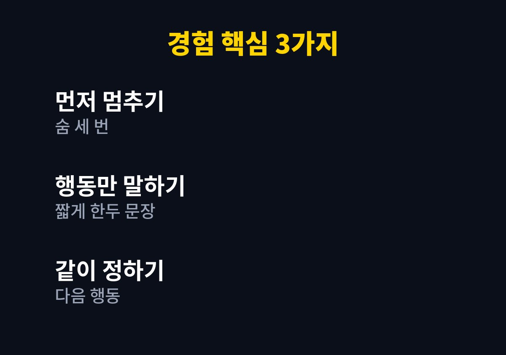
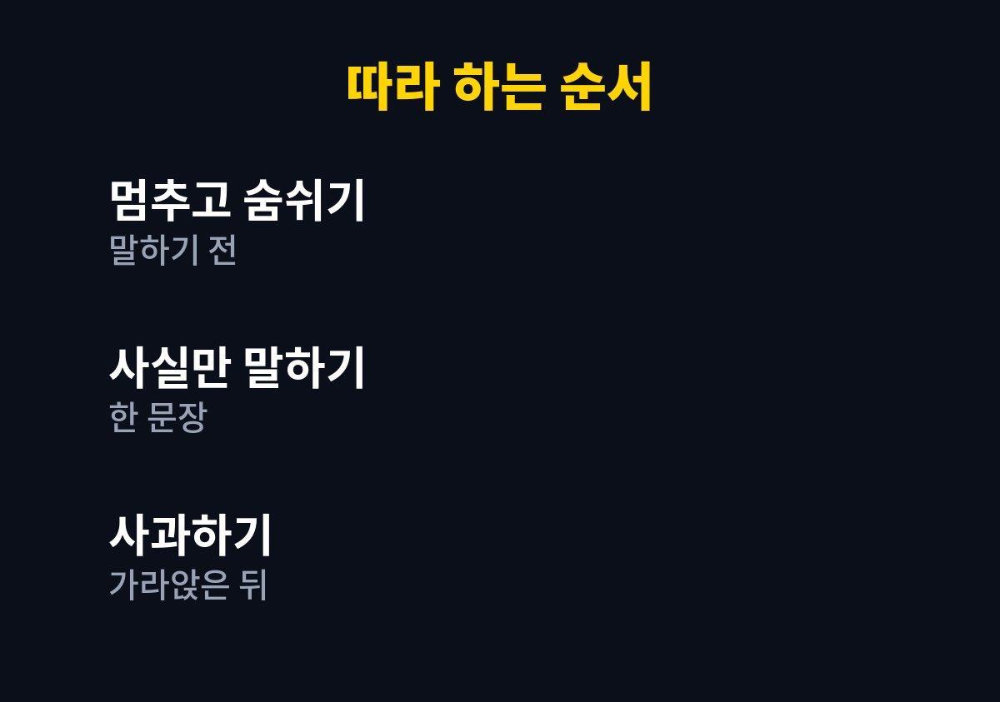

이 글은 아이가 말을 듣지 않을 때 나도 모르게 목소리가 커지고, 그 뒤에 후회하는 부모를 위해 쓴 글이다.
나는 온라인 쇼핑몰을 운영하며 두 아이를 키우는 아빠다.
하루 종일 고객 문의에 시달리다 퇴근하면 인내심이 바닥나 있을 때가 많았다.
그런 날일수록 아이의 작은 실수에도 크게 반응했고, 잠든 얼굴을 보며 미안해한 적이 많았다.
그래서 화를 줄이고 말이 아이에게 닿게 하는 순서를 만들어 보았다.
아이가 양말을 던지거나 약속을 어기면 나는 먼저 목소리가 올라갔다.
소리를 지르면 그 순간은 조용해졌지만, 아이는 무엇이 잘못인지 배우기보다 아빠 눈치를 보는 듯했다.
같은 일이 며칠 뒤에 또 반복되는 것을 보고 이 방법이 맞지 않는다고 느꼈다.
사실 소리를 지른 뒤에는 나도 마음이 불편해서 저녁 내내 말수가 줄었다.
부모도 지친 상태에서는 감정을 조절하기 어렵다.
그래서 의지를 다지기보다 미리 정해 둔 순서가 필요하다고 생각했다.
순서가 있으면 지친 날에도 같은 방식으로 말할 수 있다.
나는 화가 나기 직전에 말이 빨라지고 어깨가 올라간다는 것을 알게 되었다.
몸의 신호를 알아차리자 말하기 전에 잠시 멈출 수 있었다.
신호를 아는 것만으로도 절반은 해결된 기분이었다.
화가 난 순간의 내 표정을 떠올려 보는 것도 멈추는 데 도움이 되었다.
일주일 동안 화가 났던 순간을 메모해 보니 대부분 아침 준비 시간과 잠들기 전이었다.
아이가 특별히 더 못되게 군 것이 아니라 내가 급하고 피곤한 시간대였다.
그 시간대에는 아이에게 기대하는 수준을 일부러 낮추기로 했다.
아이에게 말하기 전에 숨을 세 번 쉬고 속으로 셋까지 센다.
짧은 멈춤만으로도 첫마디가 훨씬 부드러워졌다.
급한 상황이 아니라면 일 분 정도 물을 마시러 가는 것도 도움이 되었다.
멈추는 동안 아이에게 잠깐만 기다려 달라고 말하면 분위기가 달라지는 것이 느껴졌다.

너는 왜 이러니 대신 양말이 바닥에 있으면 밟을 수 있다고 사실만 말했다.
사람을 탓하지 않고 행동만 이야기하니 아이도 덜 방어적으로 들었다.
아이가 변명을 시작하면 끝까지 듣고 나서 다음 행동을 정하는 쪽으로 대화를 이끌었다.
| 항목 | 바꾸기 전 | 바꾼 뒤 |
|---|---|---|
| 첫마디 | 너 또 그러니 | 지금 바닥에 있구나 |
| 길이 | 길게 설교 | 한두 문장 |
| 마무리 | 소리 지르고 끝 | 다음 행동을 같이 정함 |
표에 적은 것처럼 말의 길이와 마무리를 바꾼 것이 가장 크게 느껴졌다.
설교가 길어질수록 아이는 듣지 않고 시간이 지나가기만 기다렸다.
아이가 내 말을 끝까지 듣는 시간이 늘었다.
나도 말하고 난 뒤 후회하는 일이 줄었다.
아이가 먼저 아빠 나 이렇게 해 볼게 하고 말하는 날도 생겼다.
잠자리에서 오늘 있었던 일을 서로 이야기하는 시간이 자연스럽게 늘었다.
화를 내지 않는 것과 아무 규칙이 없는 것은 다르다.
안 되는 일은 차분하지만 단호하게 말해야 한다.
아이의 나이와 성향에 따라 알아듣는 정도가 다르니 말의 길이는 아이에게 맞춰 조절해야 한다.
반복되는 심한 분노나 공격적인 행동이 있거나 부모 본인의 감정 조절이 계속 어렵다면 소아청소년과나 상담 기관 등 전문가의 도움을 받는 것이 좋다.
1. 화가 올라오면 먼저 말을 멈추고 숨을 세 번 쉰다.
2. 아이의 행동을 사실만 한 문장으로 말한다.
3. 아이가 왜 그랬는지 한 번 들어 본다.
4. 다음에 할 행동을 아이와 같이 한 가지만 정한다.
5. 내가 소리를 냈다면 감정이 가라앉은 뒤 짧게 사과한다.

처음부터 다 지키려 하면 오히려 부담이 되어 나는 한 번에 한 단계씩 연습했다.
잘 안 된 날은 다음 날 다시 시작하면 된다고 스스로에게 말해 주었다.
아이를 바꾸기 전에 내 말하기 순서를 먼저 바꾸는 것이 더 빠르다고 느꼈다.
오늘 한 번만 말하기 전에 숨을 세 번 쉬어 보길 바란다.
말투가 바뀌면 집안의 분위기도 조금씩 바뀐다는 것을 직접 느꼈다.
※ 2026년 기준 개인 육아 경험을 바탕으로 정리한 일반 정보이며, 아이의 발달이나 건강에 걱정이 있다면 소아청소년과 등 전문가와 상담하시길 바란다.